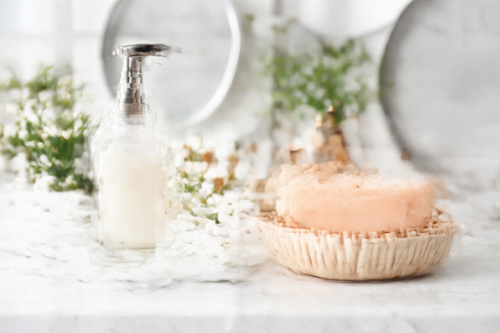

Soap Dispenser vs Bar Soap: Which Is More Hygienic?

Product Researcher & Home Design Expert

Quick Answer
Both are equally effective at cleaning hands when used with proper 20-second technique. Liquid soap dispensers (especially touchless) win on hygiene in shared/public settings. Bar soap wins on cost (4x cheaper per wash) and environmental impact (75% less carbon footprint). For home use, choose based on your priorities — hygiene differences are minimal with regular cleaning.
Table of Contents
Head-to-Head Comparison
Before diving into the details, here's a quick overview of how soap dispensers and bar soap stack up across the criteria that matter most:
| Criteria | Liquid Soap Dispenser | Bar Soap | Winner |
|---|---|---|---|
| Hygiene (home) | No cross-contact with touchless; pump may harbor bacteria | Surface bacteria don't transfer to hands during washing | Tie |
| Hygiene (shared) | Touchless eliminates contact; sealed refills prevent contamination | Sits in communal moisture; higher contamination risk | Dispenser |
| Cost per wash | ~3-5 cents per wash | ~0.5-1 cent per wash | Bar Soap |
| Environmental impact | Plastic bottles, higher water use in production | Paper/no packaging, lower carbon footprint | Bar Soap |
| Convenience | One-hand operation, precise dosing | Can slip, leaves residue, needs soap dish | Dispenser |
| Skin gentleness | pH-balanced formulas available; moisturizers common | Can be drying (high pH); natural options available | Dispenser |
| Variety | Liquid, foam, gel, antibacterial — huge selection | Natural, exfoliating, moisturizing — growing market | Tie |
| Waste | Plastic pump bottles; some refillable | Minimal packaging; biodegradable product | Bar Soap |
Score: Dispenser 3, Bar Soap 3, Tie 2. The winner depends entirely on what you prioritize. Let's break down each factor in detail.
Hygiene: What the Science Actually Says
The hygiene debate between liquid and bar soap is one of the most persistent myths in home care. Here's what peer-reviewed research tells us:
The Bar Soap Bacteria Myth
Yes, bacteria can colonize the surface of bar soap. A 1965 study in Proceedings of the Society for Experimental Biology and Medicine found that bacteria from used bar soap did not transfer to the next user's hands during normal handwashing. This finding has been confirmed repeatedly, including a 1988 study in Epidemiology and Infection that deliberately contaminated bar soaps with pathogenic bacteria — none transferred to hands during washing.
"Washing with contaminated bar soaps did not transfer bacteria to subjects' hands. [...] Bar soap does not appear to be a vector for infection during normal use."
— Heinze & Yackovich, Epidemiology and Infection, 1988
The reason is simple: when you lather bar soap, the mechanical action of rubbing combined with the surfactant properties of the soap lift bacteria off both the bar and your hands, sending them down the drain. The bacteria on the bar's surface are rendered irrelevant by the washing process itself.
The Liquid Soap Contamination Problem
Ironically, liquid soap has its own hygiene issue that's far less discussed. A 2011 study in Applied and Environmental Microbiology found that 25% of refillable bulk soap dispensers in public restrooms contained fecal coliform bacteria — because people refill them by pouring new soap on top of old residue without cleaning the reservoir.
This means a refillable liquid soap dispenser that isn't cleaned regularly can be less hygienic than bar soap. The safest option? A touchless dispenser with sealed cartridge refills. The least safe? A bulk-refill pump dispenser that's never been cleaned internally.
The CDC's Position
The Centers for Disease Control and Prevention (CDC) recommends using "soap and water" for hand hygiene — without specifying bar vs. liquid. Their guidance emphasizes technique (20 seconds of lathering, covering all surfaces) over soap form. Both are effective when used correctly.
Cost Comparison: Bar Soap Wins by a Landslide
The cost difference between bar soap and liquid soap is dramatic and often underappreciated:
| Metric | Liquid Soap (Dispenser) | Bar Soap |
|---|---|---|
| Average price | $4.99 / 12 oz bottle | $1.00 / 4 oz bar |
| Washes per unit | ~120 washes | ~250 washes |
| Cost per wash | ~4.2 cents | ~0.4 cents |
| Family of 4, annual cost | ~$73 | ~$18 |
| Dispenser hardware cost | $10-50 (one-time) | $3-10 soap dish |
Over a year, a family of 4 saves approximately $55 by using bar soap instead of liquid soap from a dispenser. Over 5 years, that's $275 — enough to buy a premium bathroom accessory set.
Foaming soap dispensers narrow the gap somewhat: by mixing air into the soap, they use about 40% less soap per wash. But even at $2.50 per wash equivalent, liquid soap remains 3-4x more expensive than bar soap per use.
Environmental Impact: Bar Soap Is Clearly Greener
If environmental impact is your priority, bar soap wins decisively across every metric:
Carbon Footprint
A 2009 study in Environmental Science & Technology by Koehler and Wildbolz found that liquid soap has a 25% larger carbon footprint per wash than bar soap. The difference comes from manufacturing (liquid soap requires more energy to produce) and packaging (plastic bottles vs. paper wrappers).
Water Usage
Liquid soap production requires approximately 5x more water than bar soap production per wash equivalent. Additionally, people tend to use more water when washing with liquid soap because it takes longer to rinse completely.
Packaging Waste
The average American household goes through 10-15 plastic soap pump bottles per year. Bar soap typically comes in paper wrapping or no packaging at all. Even "refill pouches" for liquid soap use flexible plastic that's difficult to recycle in most municipalities.
The Refill Factor
Refillable soap dispensers reduce plastic waste significantly compared to buying new pump bottles. Bulk liquid soap refills (32 oz+) cut packaging waste by about 70%. If you choose liquid soap, refilling from large containers is the most environmentally responsible approach.
Convenience & User Experience
Liquid Soap Dispensers: More Convenient
- One-hand operation — critical when your other hand is holding a child, food, or a pet
- Precise dosing — same amount every time, no waste from big soap chunks
- No soap dish needed — no slimy residue on your countertop
- Touchless options — wave your hand, get soap. Ideal for busy kitchens
- Child-friendly — kids find pumps and sensors easier than lathering a slippery bar
Bar Soap: Simpler but Messier
- No mechanism to break — no pumps, sensors, or batteries to fail
- Travel-friendly — TSA-compliant, no liquid restrictions
- Visible depletion — you can see exactly how much soap remains
- Dual-use — works for hands, body, and even hair (with the right formulation)
- The downsides — can slip, leaves residue on soap dishes, gets mushy when wet
For most people, the convenience factor alone pushes them toward liquid soap dispensers. The "slimy soap dish" problem is the #1 reason people switch from bar to liquid, based on consumer survey data.
Skin Health & Dermatology Perspective
The impact on your skin depends more on the specific soap formulation than on whether it's bar or liquid:
pH Levels
Traditional bar soap has a pH of 9-10 (alkaline), while healthy skin has a pH of 4.5-5.5 (slightly acidic). This pH mismatch can strip natural oils and cause dryness, especially for people with sensitive or eczema-prone skin. Modern "syndet bars" (synthetic detergent bars like Dove) have a pH of 5.5, matching skin pH perfectly.
Liquid soaps are typically formulated at pH 5-7 — closer to skin pH. This makes them generally gentler on sensitive skin, though cheap liquid soaps can still contain harsh surfactants like sodium lauryl sulfate (SLS).
Moisturizing
Liquid soap formulations easily incorporate moisturizers like glycerin, aloe, and shea butter. Bar soap can include these too, but the saponification process limits how much moisturizer the bar can hold. If you have dry or sensitive skin, a pH-balanced liquid soap with moisturizers is typically the dermatologist-recommended choice.
Dermatologist Recommendation
The American Academy of Dermatology recommends "gentle, fragrance-free cleansers" without specifying bar vs. liquid. For most people, either works fine. For those with eczema, rosacea, or chronic dry skin, a pH-balanced liquid cleanser (like CeraVe or Vanicream) is usually preferred.
When to Choose a Soap Dispenser
A liquid soap dispenser is the better choice when:
- Multiple people share the same sink — especially in offices, guest bathrooms, and households with roommates
- You have young children — pumps and sensors are easier for small hands
- Kitchen use — one-hand operation matters when cooking
- Hygiene is the top priority — touchless dispensers with sealed cartridges offer maximum cleanliness
- Sensitive skin — pH-balanced liquid formulas are gentler
- Aesthetics matter — modern dispensers can be design statements
When to Choose Bar Soap
Bar soap is the better choice when:
- Budget is a priority — 4x cheaper per wash than liquid
- Environmental impact matters — dramatically less waste and carbon
- You live alone or with a partner — hygiene concerns are minimal in small households
- Travel — no liquid restrictions, no spillage
- Minimalism — no plastic, no batteries, no mechanisms
- You prefer natural products — artisanal bar soaps with simple ingredients are widely available
Our Verdict
The Bottom Line
For shared spaces and kitchens: Use a touchless soap dispenser. The hygiene benefit is real and the convenience is unmatched.
For personal bathrooms: Either works equally well. Choose based on budget (bar soap) or convenience (dispenser).
For the environmentally conscious: Bar soap is the clear winner. If you must use liquid, buy bulk refills and use a reusable dispenser.
For sensitive skin: pH-balanced liquid soap (pH 5.5) from a clean dispenser is the gentlest option.
The most important factor isn't the form of soap — it's the technique. Twenty seconds of thorough lathering with either bar or liquid soap removes 99%+ of transient bacteria from your hands. The CDC, WHO, and dermatologists all agree on this.
If you've decided a soap dispenser is right for you, check out our detailed reviews:
Frequently Asked Questions
Is bar soap less hygienic than liquid soap?
Not inherently. Studies show that while bacteria can live on bar soap surfaces, they do not transfer to hands in meaningful amounts during normal handwashing. The CDC considers both forms equally effective when used with proper 20-second washing technique.
Is liquid soap better for the environment than bar soap?
No. Bar soap has a significantly lower environmental impact. It requires less water and energy to produce, uses less packaging (paper wrapper vs plastic bottle), and has a smaller carbon footprint per wash. A 2009 study in Environmental Science & Technology found liquid soap has a 25% larger carbon footprint.
Which is cheaper: bar soap or liquid soap?
Bar soap is significantly cheaper per wash. A $1 bar provides approximately 200-300 hand washes. A $5 bottle of liquid soap provides 100-150 washes. Over a year, a family of 4 spends roughly $15-20 on bar soap vs $60-80 on liquid soap.
Can I put bar soap in a liquid soap dispenser?
Not directly, but you can make liquid soap from bar soap. Grate the bar, dissolve it in boiling water (1:4 ratio), let it cool, and pour into a dispenser. The consistency won't be perfect and may clog some pumps, but it works in a pinch. For best results, use a wide-nozzle pump.
Do antibacterial soaps work better than regular soap?
No. The FDA banned triclosan (the most common antibacterial agent) from consumer soaps in 2016 after determining that antibacterial soaps were "no more effective than regular soap" at preventing illness. Plain soap with proper technique is sufficient for home use.
How often should I clean my soap dispenser?
The reservoir should be rinsed with hot water every time you refill it. The exterior and pump mechanism should be wiped weekly. For automatic dispensers, clean the sensor window weekly. Failing to clean a refillable dispenser allows bacterial biofilms to form inside.
Related Articles
- Best Soap Dispensers of 2026: 7 Expert-Tested Picks
- Best Automatic Touchless Soap Dispensers
- Best Shower Heads — Upgrade your shower
- Best Bathroom Vanities — Complete your bathroom
- Best Toilet Seats — Hygiene meets comfort
- Best Shower Curtains — Style your bathroom